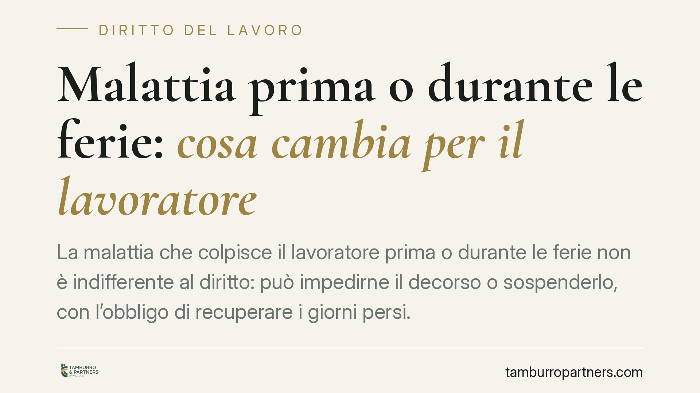

Malattia prima o durante le ferie: cosa cambia per il lavoratore
La malattia che colpisce il lavoratore prima o durante le ferie non è indifferente al diritto: può impedirne il decorso o sospenderlo, con l'obbligo di recuperare i giorni persi. Il principio poggia su fonti costituzionali ed europee, ma resta il potere del datore di collocare le ferie. Vediamo cosa distingue le due ipotesi e come muoversi correttamente.

Il quadro: due esigenze diverse
Ferie e malattia rispondono a finalità distinte. Le ferie servono al recupero delle energie psicofisiche e alla vita di relazione; la malattia impone la cura di un'infermità. Poiché durante lo stato morboso il lavoratore non può realizzare il fine di riposo, la giurisprudenza riconosce da tempo che la malattia, di regola, prevale sulle ferie.
Il leading case è Corte Costituzionale n. 616/1987, che ha dichiarato l'illegittimità costituzionale delle norme nella parte in cui non prevedevano la sospensione del periodo feriale in caso di malattia. Su questa base si è consolidata la giurisprudenza di legittimità.
Inquadramento normativo
Il potere del datore di lavoro di collocare le ferie è disciplinato dall'art. 2109 del Codice civile: l'imprenditore stabilisce il periodo di godimento, tenendo conto delle esigenze dell'impresa e degli interessi del lavoratore. Si tratta però di un potere che incontra un limite nel diritto al riposo effettivo.
Questo diritto è ancorato a fonti di rango primario ed europeo. L'art. 10 del D.Lgs. 66/2003 fissa in almeno quattro settimane annue il periodo minimo di ferie, di cui due da godere nell'anno di maturazione. La Direttiva 2003/88/CE (organizzazione dell'orario di lavoro) rafforza il principio: le ferie devono garantire un riposo effettivo, non un mero periodo di assenza formale. Ne discende che i giorni coincidenti con la malattia non assolvono la loro funzione e vanno recuperati.
Le due ipotesi non coincidono
La distinzione è centrale e va tenuta ferma.
Malattia insorta PRIMA delle ferie già richieste. Se lo stato morboso si manifesta prima dell'inizio del periodo feriale programmato, di norma le ferie non decorrono: il periodo resta da godere in un momento successivo, salva diversa organizzazione datoriale. La malattia, insomma, "vince" sulla programmazione perché il lavoratore non è nelle condizioni di riposare.
Malattia insorta DURANTE le ferie. In questo caso la giurisprudenza ammette la sospensione del decorso feriale a partire dalla comunicazione della malattia, con conseguente recupero dei giorni interessati. La sospensione, tuttavia, non è automatica in ogni evenienza: rileva l'effettiva incompatibilità tra la patologia e la finalità di recupero delle ferie. Un malessere lieve può non giustificare la conversione dell'intero periodo.
E i permessi? Un regime differente
Il trattamento dei permessi non è sovrapponibile a quello delle ferie. I permessi retribuiti e i ROL (riduzioni di orario di lavoro) hanno natura e disciplina spesso rimessa alla contrattazione collettiva, che regola modalità di fruizione e recupero.
Diverso ancora il caso dei permessi ex Legge 104/1992 per l'assistenza a familiari disabili: sono finalizzati all'assistenza e non al riposo del titolare, sicché la loro fruizione in stato di malattia va valutata con attenzione al presupposto specifico. In tutti i casi conviene verificare la disciplina del contratto collettivo applicato.
Attenzione all'abuso
La prevalenza della malattia non è un salvacondotto. Se il lavoratore, durante la malattia dichiarata, svolge attività incompatibili con lo stato di infermità o idonee a ritardarne la guarigione, l'azienda può contestare l'abuso. In tali ipotesi sono legittimi provvedimenti disciplinari, fino al licenziamento nei casi più gravi. La malattia va vissuta come tale, non come strumento per estendere di fatto il riposo.
Cosa fare in concreto
- Comunica subito. Informa l'azienda dell'insorgenza della malattia con la massima tempestività, prima o durante il periodo feriale, senza attendere.
- Certifica. Fai trasmettere il certificato medico telematico all'INPS e verifica che il datore riceva il numero di protocollo; conserva copia della documentazione.
- Chiedi la sospensione per iscritto. Formalizza la richiesta di sospensione o rinvio delle ferie, così da avere prova della comunicazione e della data.
- Rispetta le fasce di reperibilità. Rimani rintracciabile negli orari previsti per le visite di controllo ed evita attività incompatibili con la patologia.
- Consulta il contratto collettivo. Per permessi e ROL verifica la disciplina applicata, che può prevedere regole diverse dalle ferie.
Disclaimer
Contributo informativo a cura di Tamburro & Partners - Avv. Giuseppe Tamburro. Non costituisce parere legale.
Ogni storia di lavoro ha i suoi tempi.
Se gestisci HR e vuoi un confronto su contenzioso, ispezioni o licenziamenti, scrivi allo studio. Ti rispondiamo entro un giorno lavorativo.